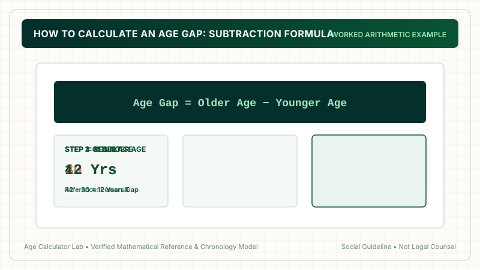
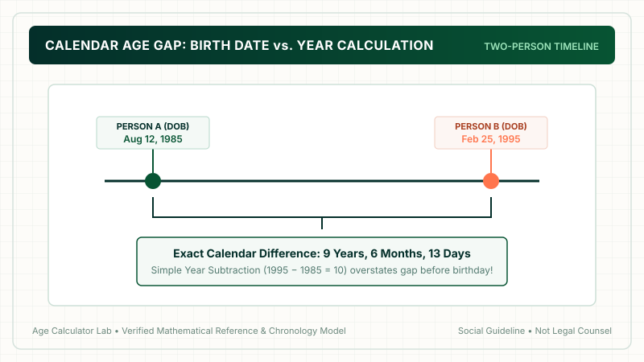

To calculate an age gap, subtract the younger person's age from the older person's age: Older Age − Younger Age = Age Gap. For example, if someone is 42 and their partner is 30, the age gap is 42 − 30 = 12 years. If you know both complete dates of birth, an age gap calculator calculates the exact duration down to elapsed years, months, and days.
1. What Is an Age Gap?
An age gap is the span of elapsed chronological time separating two individuals. Whether comparing partners in a relationship, siblings in a family, classmates, or athletes, measuring an age gap allows you to understand how many calendar years separate two life timelines.
In our comparative overview of age gap vs age difference, we noted that while "age difference" is a broad mathematical term, "age gap" is the term people most frequently use when discussing couples, generational divides, and social demographics.
2. The Basic Age Gap Formula
Calculating an age gap requires simple arithmetic. When dealing with whole completed ages, the formula is:
The Core Age Gap Subtraction Formula
Where Older Age is the completed age of the senior individual, and Younger Age is the completed age of the junior individual.
This fundamental formula produces the whole-number difference in years between two individuals.

3. Step-by-Step Manual Calculation
To calculate an age gap manually on paper or in your head, follow these three clear steps:
- Step 1: Identify Both Ages
Confirm the current completed chronological age of each person (e.g., Person A is 38; Person B is 26). - Step 2: Order from Oldest to Youngest
Determine which number is greater. 38 is greater than 26. - Step 3: Execute Subtraction
Subtract:38 − 26 = 12. The calculated age gap is 12 years.
4. Calculating from Stated Whole Ages
Calculating an age gap from stated whole ages is convenient, but it represents a snapshot in time. Because people celebrate birthdays on different days of the year, their whole-number age difference is not always static.
For example, if Emma was born on February 10, 1992, and Liam was born on October 15, 1995:
- In March 2026, Emma is 34 and Liam is 30. Their stated age gap is
34 − 30 = 4 years. - In November 2026, Liam turns 31 while Emma is still 34. Their stated age gap becomes
34 − 31 = 3 years!
Does their true age gap shrink? No! Their calendar duration never changes; only their whole completed years fluctuated because their birthdays occur in different months.
5. Calculating from Exact Birth Dates
To obtain an invariant, completely precise age gap, you must calculate using complete dates of birth (Day, Month, Year). This process evaluates the exact elapsed time along the Gregorian calendar timeline.
Exact Calendar Date Gap Formula
Calculated in: Years, Months, and Days

6. Worked Examples & Scenarios
Let’s review three real-world examples across different scenarios:
Example A: Peer Couple (Close in Age)
Person A is 29 years old, and Person B is 27 years old.
29 − 27 = 2 years.
This represents a 2-year peer age gap typical of university or early-career cohorts.
Example B: Moderate Age Gap
Person A is 45 years old, and Person B is 35 years old.
45 − 35 = 10 years.
This is a 10-year age gap (one full decade), often bringing together partners at different life stages.
Example C: Exact Calendar Date Scenario
Person A born on June 10, 1988; Person B born on December 24, 1996.
Exact calculation: 8 years, 6 months, and 14 days.
Notice that a simple birth year subtraction (1996 − 1988 = 8) underestimates the gap by more than six months!
7. Why Subtracting Birth Years Alone Can Be Inaccurate
One of the most widespread mathematical mistakes people make is subtracting only birth years:
Year 2 − Year 1 ≠ Exact Age Gap
If you were born in December 1990 and your friend was born in January 1991, subtracting 1991 − 1990 yields 1 year. But in reality, you were born just one month apart! Conversely, if you were born in January 1990 and they were born in December 1991, you are nearly two full years apart. Simply subtracting birth years introduces errors of up to 11 months.
8. Leap Years and Month Lengths in Exact Calculations
When calculating precise intervals down to the exact day, calendar arithmetic must account for three irregularities:
- Variable Month Lengths: Months have 28, 29, 30, or 31 days. When borrowing days during manual subtraction, you must borrow the exact number of days from the preceding month.
- Leap Years: Every four years (with century exceptions), February contains 29 days. An automated calculation engine counts these extra days precisely.
- Reference Date: When calculating current age, today’s date serves as the fixed benchmark.
9. Common Age Gap Combinations Table
Reference this quick look-up table for common adult age gap pairings:
| Older Age | Younger Age | Age Gap | Generational Context |
|---|---|---|---|
| 24 | 22 | 2 years | Same educational cohort |
| 28 | 24 | 4 years | Young adult peer bracket |
| 32 | 27 | 5 years | Half-decade span |
| 35 | 28 | 7 years | Emerging life-stage gap |
| 40 | 30 | 10 years | Full decade separation |
| 45 | 33 | 12 years | Cross-cohort demographic |
| 50 | 35 | 15 years | 1.5 decades difference |
| 60 | 40 | 20 years | Generational age gap |
10. Age Gap vs Dating Age Rule: Clarifying the Math
People frequently conflate calculating an age gap with calculating the "dating age rule." It is crucial to understand that these are fundamentally different operations:
- Age Gap Calculation (Descriptive): Takes two ages and calculates the difference:
Older − Younger. It does not judge whether the gap is good or bad. - Dating Age Rule (Prescriptive): Takes one person's age and computes an acceptable boundary:
(Age ÷ 2) + 7. Learn more in our guide on half your age plus seven.
11. Using the Online Age Gap Calculator
Rather than performing calendar borrows and leap-year tracking manually, our free Age Gap Calculator automates the entire process in milliseconds:
- Select whether you want to compare Whole Ages or Complete Birth Dates.
- Enter the details for both individuals.
- Get instant results displaying years, months, days, and total days elapsed.
12. Common Calculation Mistakes
Ensure your calculation is correct by watching out for these common errors:
- Confusing difference with age: An age gap of 8 years does not tell you how old either individual is; it only tells you their separation.
- Ignoring birthday sequences: Forgetting that whole-year gaps fluctuate until both birthdays pass.
- Subtracting birth years without months: Causes up to an 11-month inaccuracy.
- Assuming mathematical rules dictate compatibility: A number cannot measure emotional compatibility, relationship health, or communication.
13. Frequently Asked Questions
What is the formula to calculate an age gap?
The standard age gap formula is: Age Gap = Older Age − Younger Age. For instance, if one person is 42 and the other is 30, the age gap is 42 − 30 = 12 years.
Can you calculate an age gap just by subtracting birth years?
Subtracting birth years (e.g., 2000 − 1990 = 10) provides an approximation, but it is only accurate if both individuals have already had their birthdays in the current calendar year. If one person has not had their birthday yet, the actual current gap in whole years is one year smaller.
Does an age gap stay the same all year?
The exact calendar duration between two birth dates remains fixed. However, the difference between their stated completed whole years temporarily changes by one year during the window between their respective birthdays.
How do you calculate an exact age gap down to months and days?
To calculate an exact age gap down to days, compare complete birth dates. Subtract earlier calendar days and months from the later date, borrowing days from previous months and months from the year where necessary.
What is considered a normal or average age gap?
Globally, demographic studies show that heterosexual married couples have an average age gap of approximately 2 to 3 years. However, adult relationships function successfully across a very wide range of age differences.
What is the difference between an age gap and the dating age rule?
An age gap is a descriptive arithmetic calculation between two existing ages. The dating age rule (half your age plus seven) is a cultural guideline that calculates a suggested boundary range for one individual.
How does a leap year affect age gap calculation?
Leap years introduce a 366th day (February 29) every four years. A precise calendar calculation accounts for leap days to ensure the total elapsed day count is exact.
What tool should I use to calculate my age gap?
Use our verified Age Gap Calculator for quick whole-year or birth date comparisons, or use the Age Difference Calculator if you need full breakdowns into total days, hours, and minutes.
14. Summary & Key Takeaways
Calculating an age gap is simple: subtract the younger age from the older age. When using whole years, remember that the gap temporarily fluctuates between birthdays. When accuracy is paramount, use complete dates of birth to calculate exact elapsed years, months, and days.

Methodology & Verification Standards
- Calculation Principle: Arithmetic subtraction of elapsed chronological years and exact Gregorian calendar date intervals.
- Calendar Engine: Exact month length accounting (28–31 days) and leap year reconciliation (366 days).
- Editorial Purpose: Educational arithmetic guide and computational reference.
- Review Date: October 2026.